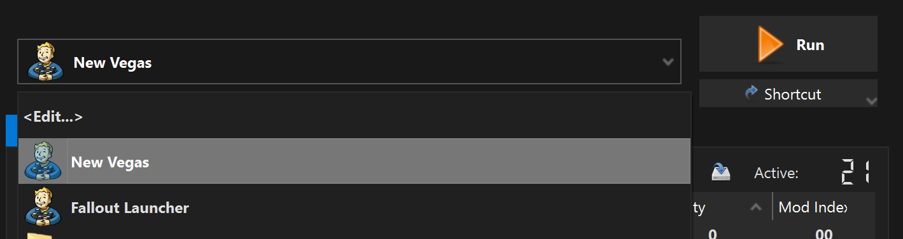

Wabbajack
The VNV Wabbajack modlist will allow you to quickly and easily install VNV, both the basic and extended sections. Read the Introduction first, then proceed to the Setup page. Once you're done, keep following this page.IMPORTANT:
The Epic Games Store version of the game is not supported by this Wabbajack list.
- Download the latest Wabbajack.
- Create a new folder anywhere outside of any default Windows folders.
- Place the downloaded Wabbajack.exe in this folder, then run it.
- Click Browse Modlists, enable Show Unofficial Lists, then locate Viva New Vegas in the gallery and click the download button in the corner.
- In Installation Location select an empty folder that is NOT the following:
- The Steam folder,
- Any default Windows folders,
- The game folder,
- The folder where you put Wabbajack.exe.
- Begin the installation.
- Accept the Nexus Mods API request.
- If you are not a Premium user you will need to manually click download for each mod.
- Once complete, the installation will show a green Installation Complete screen.
- If you see a red Installation Failed screen, please join the ModdingLinked Discord server for support.
Exclusions
- Open Windows Security.
- Open Virus & threat protection.
- Click Manage settings under Virus & threat protection settings.
- Scroll down and click Add or remove exclusions under Exclusions.
- Add a Folder exclusion and point it to the Installation Location folder.
This operation is required because Windows can block MO2 and mod files from loading due to how MO2's virtualized filesystem works.
If you are using a third-party antivirus, you will need to find the exclusions menu and add one to the same folder.
Root Mods
- In your Installation Location, open the Root Mods folder,
- Copy everything to the game's Root folder.
- Double-click on FNVpatch.exe to run it,
- A command prompt window will open and should say FalloutNV.exe patched!,
- Close the command prompt and a file named FalloutNV_backup.exe should appear in the game's Root folder.
BSA Decompressor (Optional)
BSA Decompressor will give you slightly better performance and faster loading times at a small disk space cost.- In your Installation Location, open the BSA Decompressor folder,
- Run FNV BSA Decompressor.exe,
- The Fallout: New Vegas and Decompressed Archives paths should be filled by default (root folder and data folder respectively). If they aren't, close the program and re-run your game launcher to generate the required registry key,
- Click Decompress, wait for the process the finish, then exit the program once finished.
Performance and Stability Guide
IMPORTANT:In-depth guide about how to fix the game's lackluster performance, display issues and alt-tabbing. Covers topics such as DXVK, framerate limiting, display modes, lag and HDR.
If you are an AMD GPU user, installing DXVK is mandatory, otherwise your game will crash.
In your Installation Location, open Mod Organizer 2.
If you are planning to install texture mods, enable the NVTF - Texture Modding Preset mod in the Utilities separator!To run the game, use the New Vegas executable in Mod Organizer 2.
You can use the Shortcut drop-down to create Desktop and Start Menu shortcuts, this will allow you to launch the game without opening the MO2 GUI. 
This Wabbajack list already comes with decompressed plugins and better LOD.
- Verify files on Steam or GOG Galaxy.
- Reinstall the list from the Wabbajack tool and enable the "Overwrite Installation" checkbox.
- Reapply the 4GB Patcher by running it again.
You have now completed the full Viva New Vegas guide and you can enjoy the game. You may want to add your own mods on top of the guide, but that is only recommended if you are an experienced modder since you need to know how to use FNVEdit and The Method and have good general knowledge of many game systems.
And remember, we may not provide support for setups that have added mods, especially if you went overboard.